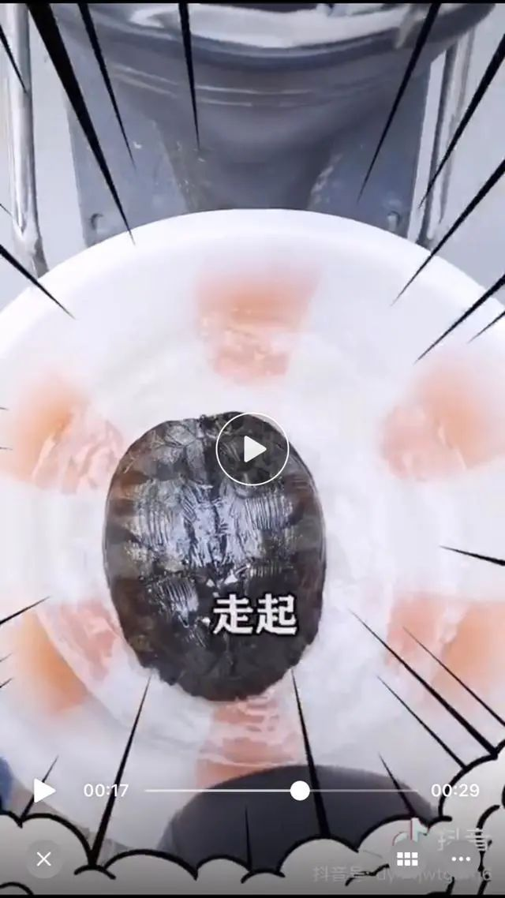
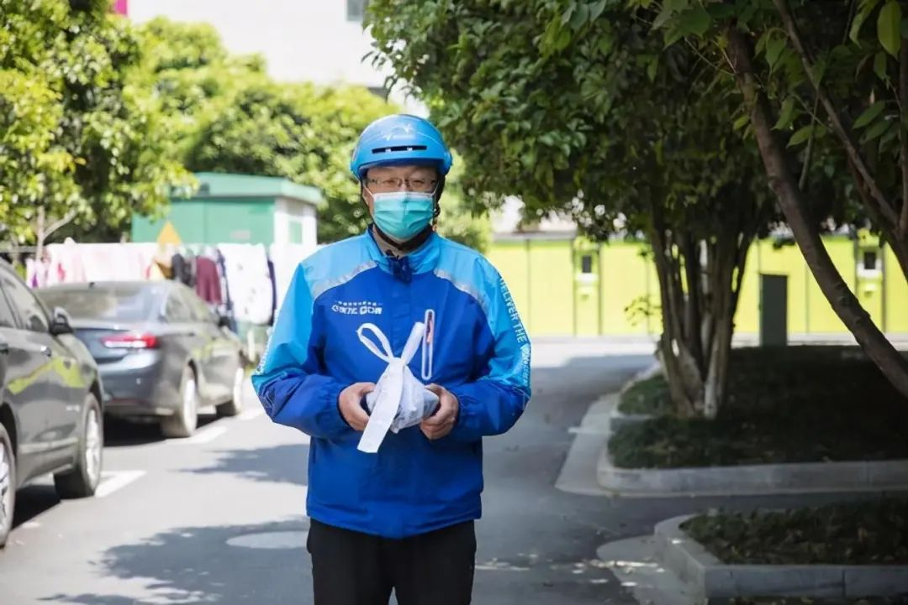

帮忙遛下乌龟！杭州外卖小哥接到爆笑“订单备注”，还有更绝的
30岁的湖州人陈建，是名“饿了么”的外卖骑手，在杭州外卖界有些名气。
不仅因为他曾是月薪4万的电影美术指导，还因为他的抖音号“蓝骑士建哥”走红了。
他的短视频作品不多，从今年5月1日的第一条开始，总共68个作品，点赞数超过65万，收获3万粉丝。翻看每一个短视频，身穿蓝色制服的他，他都在分享送外卖或者帮买跑腿中发生的有趣的事。
陈建说，做视频的初衷很简单，就像简介中介绍的一样，“我只想做一个有趣的人。”
求小哥帮我遛一下宠物
遛好再放回去
10月11日的一个短视频，是陈建花了1个多小时拍摄的。
“这一单让我遛宠物，也不知道我遛的对不对？差点想吃掉。”简单的文案看不出实际内容，点开视频，陈建记录得很详细。
他抢了一个杭州城西的帮买单，顾客留言：“回老家了，宠物放在地下杂物间，求小哥帮我遛一下，遛好了再放回去，有打赏哦！谢谢哦！”
原本以为是小狗小猫，谁能知道，一到顾客家里，服务对象竟然是一只养在塑料盆里的乌龟。
后来为了体现“遛”，他连盆带龟地放在了电动车上，在小区里绕了一圈，又将塑料盆放在附近的小河里，让乌龟游了会水。这就算是完成服务了，也不知道顾客满不满意。
陈建说，帮买和跑腿的单子都需要“抢”，因为一单可以挣十几块，抵三四单外卖呢。
“当时我以为就稍微遛遛小狗小猫，谁知道是乌龟，我也没遛过呀。和顾客沟通，他说随便遛，我也不能把乌龟从塑料盆里拿出来，地上那么脏，要是有细菌怎么办。我索性带着盆出门了。”
晃晃悠悠，算上拍视频的时间，他陪这只乌龟一个多小时。虽然就十几块钱，他自己也挺开心的。看着做出来的视频，他乐了好久。
还接到过帮买菜的
最后他连饭都一起帮人家做了
在短短2年的“蓝骑士”生涯里，陈建总能碰到有意思的事情。
“前不久，我要去菜场买菜，打开手机看看有没有合适的帮买单子，正好有个同小区的单子，顾客要买几样菜，准备给过生日的老婆做顿丰盛的晚饭。”陈建觉得顺路，挺合适，就接了单。
一条鲫鱼、花蛤和两样蔬菜，30多元。他把菜送到了顾客手里，对方是个20多岁的小伙子。“我不会做饭，你会不会做呀？
一听这话，陈建心里咯噔了一下。“我会。但是不知道口味合不合你们的。”他老实回答。
小伙子也不客气，表示让陈建教他做。
“最后四个菜，全是我做的！”陈建说，“为了体现他的参与感，最后的鱼汤，我煎好了鱼，加好水，等着熬汤。他只要拿着勺子等老婆下班就可以了。”
前几天，他也接了一个帮买的单子，一桶油、一袋米。陈建做好了要爬楼的准备。可是他到了目的地，小区单元门紧锁，原来门锁坏了，还没修好。
顾客从4楼吊了一根绳子下来，为了省力，他还让陈建试验了一回“轮滑原理”。
绳子的一头系在陈建的电动车上，另一头系着食物，电动车骑得越远，食物吊得越高。
你给外卖小哥下过什么难忘的单子
欢迎留言
上午10点半到下午1点半，傍晚5点到7点半，陈建是一名兢兢业业的外卖骑手，会连续接单，会为赶时间奔跑，也会过了饭点饿肚子。
剩余的时间，他会接自己感兴趣的单子，碰到有意思的事情，会记录下来。
一只手机一个三角架，常常陪着他。
有些普通的单子，但会因为“备注”而变得不同。
他曾接到过给减肥不吃饭的闺蜜投食的单子；接到过购买猫粮请他帮忙喂流浪猫的单子；接过一个地址特别详细的订单，“沿着公园走到头，尽头处左转，看到树林穿过小树林5米后再右转厕所旁边的第一个窗口”；还接了一个帮买口红的单子，他学着主播的样子，在手臂上试色号……
10月19日下午，小时新闻记者联系上陈建的时候，正是他空闲的时候，他在钓鱼。
“让自己安静会儿。”他说，希望通过自己的作品，慢慢积累粉丝。“分享在送餐过程中有趣的事情，不仅是逗乐大家，也许也能带来些正能量吧。”
生活中的惊喜或者趣事，无处不在。
你也许是名骑手，你曾碰到过什么奇葩订单吗？你也许是个下单的人，你曾经要求骑手做过什么？
欢迎留言，大家一起乐！
来源：钱江晚报·小时新闻记者 杨茜